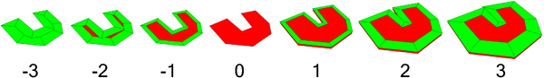
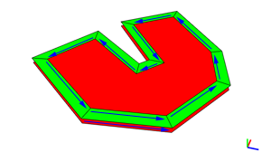

offset operation
distance float Offset distance, negative or positive
keepFaces selector { all | inside | border } Selects which faces to keep. all is default.
The offset operation constructs offset polygons at distance for each face of the current shape's geometry. Depending on the sign of the parameter, offset polygons are constructed in the interior (negative sign) or in the exterior (positive sign), respectively.
Scope
The scope's size is adapted to the new geometry.
Occluder shape
In case an offset selector is applied an occluder shape is automatically generated before the offset is applied. The occluder shape is made available for unlabeled occlusion queries.
Compontent tags
The operation propagates existing component tags to the resulting geometry. See the section about tag propagation for more information on working with component tags.
Related
Examples
Offset Polygons and Border Faces
The following illustration lists offset polygons (blue) and border faces (yellow) in both the interior and exterior case.

These offset polygons have been generated using the rule
attr blue = "#3957A5"
attr yellow = "#F2BB1D"
Lot --> offset(-3) A
A --> comp(f) { inside: I | border: O }
I --> color(blue)
O --> color(yellow)
with offset between -3 and 3.
Face Orientation
In the following illustration for each face, the first edge is marked.
In the interior case (offset = -1), both the inside and the border faces are oriented counter-clockwise (positive).

In the exterior case (offset = 1), only the blue face is oriented counter-clockwise. The yellow border faces are clockwise (negative).